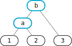
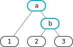

EBNF
EBNFTry (Almost) Everything?
Conflicts and Errors
Chapter two defined context-free grammars, the BNF notation for grammar rules, and the version of Extended BNF used throughout this book — rules are alternative sequences which contain literals, tokens, references to other rules, and additionally brackets for optional alternatives and braces for alternatives which can appear one or more times.
All the examples so far employed the recursive descent algorithm for recognition implemented by the EBNF module and described in chapter four:
- Consider the grammar rules to be recognition functions.
- Call the start rule.
- The lookahead (next input symbol) uniquely selects an alternative within the rule.
- If the next item in the rule is a literal or token it is collected and recognition moves on.
- If the next item is a reference another rule is called.
- Brackets are entered if the lookahead fits.
- Braces are entered and iterated as long as the lookahead fits.
- Eventually the start rule has to be completed.
As an aside, example 2/05 illustrated that this algorithm cannot handle left recursion in grammar rules.
This chapter discusses a stack-based parser to replace the recursive descent algorithm. The parser is constructed from BNF rules and supports left recursion. It is based on an idea by Don Knuth.
It turns out that EBNF rules can be translated to BNF in such a way that the stack-based parser executes the same actions as before, i.e., the objective of this chapter is to construct a more powerful parser from grammars which are not suitable for recursive descent.
All numbered classes in the examples are available from the module Ten
which is built into the practice page.
All examples in the previous chapters can use either the recursive descent parser or the stack-based parser — no changes are required!
The Idea
The construction is based on BNF notation, i.e., rules are ordered pairs with a non-terminal on the left and a symbol sequence — terminals and non-terminals — on the right. Alternatives are expressed by rules which have the same non-terminal at left.
The stack-based parser moves from left to right along the input and records each move on the stack until the top values on the stack fit a rule of the grammar. At this point there are at least as many values on the stack as there are symbols in the rule's sequence.
At this point the values corresponding to the rule are popped off the stack, optionally processed by an action, and a value corresponding to the rule is placed on the stack instead.
The process continues until the input is exhausted and the stack just contains a value corresponding to the start rule of the grammar. Success!
This looks like the obvious algorithm — but the problem is to recognize that the top values on the stack fit a rule of the grammar.
Example 10/01 shows how this might be accomplished:
- The very first button should show . If not, click it until it does.
- Toggle and
- press to represent and check the grammar.
- Press to see that the text in the is recognized.
- Remove
borcfrom the and each time press again.
The grammar describes sequences starting with a single a, optionally followed by a single b,
and ending in any number of c:
root: 'a';
root: 'a' 'b';
root: root 'c';
The grammar is left-recursive and the first two rules for root start with the same terminal symbol,
i.e., the grammar is definitely not LL(1) and it is not suitable for recursive descent.
However, the grammar is not ambiguous because a sentence starts either with a or with a and b,
and that uniquely determines how each syntax tree is built.
How should recognition proceed if it is based on this grammar? The stack-based parser is controlled by a transition diagram which is constructed by simulating execution: a position marker • is placed at the beginning of the rules and is advanced as input arrives:
The result is a directed graph where the nodes are recognition states which contain marked rules and the edges indicate transitions based on input terminals (single arrowhead) or recognized non-terminals (double arrowhead).
A non-terminal is recognized exactly when a rule can be satisfied, i.e., the graph needs edges for completed rules — rules with the marker at the end of the rule. Edges must lead from states with completed rules to states with rules where the marker is just before the non-terminal at left in the completed rule:
In the diagram above these edges are blue, labeled reduce, and are marked with double arrowheads.
Finally, there are transitions based on non-terminals (black with double arrowheads). A transition based on a terminal is called a shift and a transition based on a non-terminal is called a goto. A reduce transition is always immediately followed by a goto transition.
To get unique start and end states for the transition diagram a rule zero is added to the grammar
$accept: root $eof
where root is the start non-terminal of the grammar.
This provides a unique start state 0 for the transition diagram, namely the state which contains rule 0 marked at the beginning.
Whenever the position marker is right before a non-terminal, closure is applied (recursively), i.e., all rules for the non-terminal are marked at the beginning and are added to the state.
Rule zero also provides a unique state where the transitions end successfully,
namely the state which contains rule 0 marked at the end, following $eof,
the end of input.
Here is the complete transition diagram:
States and transitions for example 10/01 can be viewed:
- The very first button should show . If not, click it until it does.
- Toggle so that the effect of closure is displayed and
- press to represent and check the grammar.
- Check the . It contains the states and the marked rules defining each state. Each state is followed by the transition messages.
One more thought and the recognition technique is complete: The transition diagram is finite because the number and length of rules, both, are finite. However, a grammar can, for example, describe a set of nested parentheses of arbitrary depth, i.e., recognition needs a mechanism for unlimited counting which a finite diagram cannot provide.
Therefore, the states are kept on a state stack with the current state on top. Each shift and goto transition, i.e., recognizing an input terminal or a completed non-terminal, pushes one new state on top of the stack. A reduce transition pops states off the stack, namely exactly as many states as it took to complete the rule which is reduced, i.e., exactly as many states as there are symbols in the right-hand side of the rule. This can be counted for any specific path through the diagram, too.
The transition diagram really tries "everything." It starts with the parser positioned at the beginning of rule 0. It transitions and pushes the state stack for every possible input. It pops the stack for completed rules and transitions beyond them until, hopefully, the end of rule 0 is reached. The states are computed in a way that "everything" is tried in parallel, thus avoiding the complications of trial and error.
There has to be a catch — not every grammar will result in this kind of a transition diagram. The catch will show up once the state table is constructed but example 4/04 which was discussed previously provides a quick preview:
- The very first button should show . If not, click it until it does.
- Press to represent and check the grammar —
no complaints because the
ifstatement is defined with a trailingfi. - Remove the
'fi'in the and press again to see that thecheck()algorithm is not happy — the grammar is now ambiguous. - Switch to BNF: press the very first button until it shows , i.e., the EBNF grammar will be translated to BNF and the stack-based parser is used.
- Toggle to see the effect of closure and
- press to translate the grammar to BNF and create the state table.
- Check the : The last line complains about a shift/reduce conflict.
- If you scroll to state 7 you can see that it contains both,
a complete rule which could be reduced
and the opportunity to shift
else.
The Architecture
The EBNF and BNF modules
use similar class architectures to represent grammars:
A BNF Grammar object wraps a grammar for parsing
and BNF classes Rule, Lit,
Token, and NT
are used to represent the rules.
A BNF Grammar object can be constructed from
a string with rules expressed in BNF notation using the kind of bootstrap technique
described in chapter nine
which is demonstrated in example 10/02 for BNF:
- The very first button should show . If not, click it until it does.
- Press to represent and check the BNF grammars' grammar.
- Press
to let the BNF grammars' grammar represent itself and store the parser
from the new representation as the result in
run. - Press to apply this parser to the which also contains the BNF grammar's grammar.
- Press a few more times:
The
countin the increases because the grammar keeps representing itself.
The EBNF and BNF modules share some common code included from the Base module. In particular, the ability to create a scanner from the literals and token patterns in a grammar is implemented in the Base module.
The design objective was to decouple the modules as far as possible
and avoid duplicating code,
but for the fact that a BNF Grammar
can be constructed from an EBNF Grammar
using the BNF factory method Grammar.fromEBNF().
There are some subtle but significant differences which reduce the number of classes used to represent a BNF grammar:
- a BNF
Ruleis an ordered pair which contains a BNF non-terminalNTat left and a flat list of terminals and non-terminals at right, - the same non-terminal can be at left in several rules, and
- a non-terminal has a list of rules where it is at left.
The state table is computed by check() and owned
by the BNF Grammar object.
A BNF Parser is a separate object
which owns the state stack and is consumed during the parsing operation,
i.e., a BNF Parser cannot be reused
once all input has been processed.
As before, a Scanner is a separate object,
created from the terminals of a BNF Grammar
with the technique explained in chapter three.
It translates a string into
a list of Tuple objects
each of which contains a piece of the input string, the line number in the input, and a
BNF Lit or Token object
representing the piece of the input.
- In Example 10/01 the very first button should show . If not, click it until it does.
- Press to represent and check the grammar.
- Press to see
the pattern used in the scanner and
the
Tupleobjects for the text in the .
The BNF parsing method Parser.parse()
can either be called with a string,
or it can be called repeatedly,
either with a list of Tuple objects
or with a function providing such lists.
Because the parsing state is stacked, successive input lists can be pushed to the parsing method,
i.e., parsing could even operate interactively.
null acts as end of all input and matches $eof in rule zero.
An illegal input character is represented as
a Tuple containing null rather than a
Lit or Token object.
This kind of Tuple will cause an error during recognition.
- In Example 10/01 the very first button should show . If not, click it until it does.
- Press to represent and check the grammar.
- Toggle either to see all transitions
or to see only
reduceand - toggle to collect the input into lists.
- Finally, press to observe recognition:
> g.config.build = true
> g.config.trace = /./
> g.parser().parse(program)
STATE TUPLE MESSAGE RETURNS
0 (1) 'a' shift 1 null
1 (1) 'b' shift 3 null
3 (1) 'c' reduce root: 'a' 'b'; [ 'a' 'b' ]
0 (1) 'c' goto 2 null
2 (1) 'c' shift 4 null
4 (1) 'c' reduce root: root 'c'; [ [ 'a' 'b' ] 'c' ]
0 (1) 'c' goto 2 null
2 (1) 'c' shift 4 null
4 eof $eof reduce root: root 'c'; [ [ [ 'a' 'b' ] 'c' ] 'c' ]
0 eof $eof goto 2 null
2 eof $eof accept [ [ [ 'a' 'b' ] 'c' ] 'c' ]
[ [ [ 'a' 'b' ] 'c' ] 'c' ]
Recognition implicitly contains an Observer design pattern.
Input terminals are processed and trigger some of the state changes and transitions
described earlier
and the transitions result in messages: shift, reduce, goto, accept, and perhaps error.
The parser’s observe() method reacts to these messages.
It sends the message to the trace() method
if the configuration option Grammar.config.trace is set,
i.e., is set on the practice page,
and to the build() method
if Grammar.config.build,
i.e., , is set,
or if Action methods were supplied in the first call
of the parse() method.
For reduce messages
build() assembles recognized input into lists
and sends them to Action methods, if any.
The classic implementations of this parsing technique,
yacc
and
bison,
spend considerable effort on optimizing the state table.
BNF was designed to be more tutorial in nature;
therefore, the state table is a list of State objects.
Each holds marks, a list of one or more Mark objects, i.e., the marked rules,
and a messages collection which maps the symbols for the outgoing edges of the state
to the possible messages which are sent to observe()
and which define the operations on the stack.
For display purposes these messages are encoded as Message objects.
As an aside, this chapter uses the term actions for semantic actions implemented
as Action methods as introduced in previous chapters.
In contradistinction, the term messages is used for the operations on the state stack
because they are also sent as messages to observe().
The reduce messages trigger the semantic actions, if any.
Constructing the State Table
The state table is constructed by the check() method
which is called once after the rules of a BNF Grammar have been
represented.
The first State object is created
with a Mark object for rule zero marked at the beginning:
$accept: ● start-symbol $eof;
check() uses factory methods
state() and
mark()
to create state 0:
this.states.push(this.state([this.mark(this.rules[0], 0)]));
A state is created with a list of one or more marked rules.
Together they are called the core marks and they uniquely define the state.
The state additionally contains the closure of the core:
all rules for all non-terminals which immediately follow a marker.
Here is the factory method which is called with a list of Mark objects:
state (core) {
const coreLength = core.length;
const messages = {};
// compute closure: loop over core and add(ed) marks
...
return new State(this, core, coreLength, messages);
}
The state stores the number of core marks because only cores have to be compared to determine if two states are equal.
Each state maps terminals and non-terminals to messages which control parsing:
| message verb | information | effect |
|---|---|---|
shift |
next state | push onto state stack, advance in input. |
reduce |
rule | pop state stack by rule length, uncover state which expects the non-terminal. |
goto |
next state | push onto state stack. |
accept |
done! |
The State object contains a messages object:
messagesmaps a terminal symbol which immediately follows a mark in the state either to ashiftmessage which consumes the corresponding input and transition to another state, or to areducemessage which completes recognition of a rule.messagesmaps a non-terminal symbol which immediately follows a mark in the state to agotomessage which transitions to another state.messagesmaps$eofif it immediately follows a mark in the state to anacceptmessage which completes parsing.- The keys of
messagesare exactly all symbols which immediately follow one or more marks in the state. All other terminal symbols would not be expected.
messages is set up when the rules in the closure are added to the core of the state:
// compute closure: loop over core and add(ed) marks
for (let c = 0; c < core.length; ++ c)
// for each incomplete mark
if (!core[c].complete) {
// next symbol in a mark
const s = core[c].rule.symbols[core[c].position];
if (s instanceof NT && !(s.ord in messages))
// add all rules for a new non-terminal, marked at 0
s.rules.forEach(rule => core.push(this.mark(rule, 0)), this);
// map this next terminal or non-terminal to null
messages[s.ord] = null;
}
This loop runs as long as new marked rules are added —
until it reaches the eventual end of core.
.complete is true for a Mark
if the marker follows all symbols of the rule.
So far, all values in messages are null
and the keys of messages are the symbols that immediately follow one of the marks in the state.
In a similar loop in the check() method,
all state objects are then asked to advance(),
i.e., to create outgoing edges and more states as needed to terminate the edges,
and to fill in all messages collections:
// tell each state to advance
// this creates new states which are also advanced
for (let s = 0; s < this.states.length; ++ s)
this.states[s].advance(s);
The heavy lifting happens in the advance() method:
advance (stateNumber) {
// create reduce messages for complete rules
this.marks.forEach(mark => {
if (mark.complete) {
...
} // done with every complete rule
}, this);
The first step is to enter reduce messages into the messages collection
for all complete marks. The details are discussed below.
Each literal, token, and non-terminal has a unique ordinal number, starting with 0.
messages maps this number to a message.
Once the reduce messages have been entered,
all other values in messages will have to be shift or goto, with one exception:
// create accept/shift messages for each next symbol which has none
for (let a in this.messages) {
if (this.messages[a] == null) {
if (a == this.grammar.lit().ord) {
// special case: $eof
this.messages[a] = this.grammar.accept();
this.grammar.rules[0].reduced = true;
$eof only appears in rule zero
and this symbol can only lead to a reduce or accept message.
accept means that rule zero is successfully recognized.
If the symbol is not $eof, the message will be shift or goto and needs a target state
which is computed by advancing the marker across the symbol in all Mark
objects where the marker is currently just before the symbol:
} else {
// create next core by advancing marker over one symbol
const next = [ ];
let symbol = null;
this.marks.forEach(mark => {
// find a as next symbol in all marks
if (!mark.complete && a == mark.rule.symbols[mark.position].ord) {
// remember symbol and push mark after symbol
symbol = mark.rule.symbols[mark.position];
next.push(mark.advance());
}
}, this);
next is a list, used to collect all new Mark objects
with the marker moved across the symbol.
advance()
uses the factory method to create a new mark
with the same rule but the marker in the next position.
next will contain at least one Mark object,
otherwise a would not have been a key in messages for this state.
next is the core of the target state
for the shift or goto message to be recorded for
the key a in messages.
If the core cannot be found among the known states, a new state needs to be created:
// add new state with next as core, if any
// shift/goto existent or new state
if (!this.grammar.states.some((state, s) =>
state.equals(next) ?
(this.messages[a] = this.grammar.shift_or_goto(symbol, s),
true) : false, this)) {
this.messages[a] =
this.grammar.shift_or_goto(symbol, this.grammar.states.length);
this.grammar.states.push(this.grammar.state(next));
}
This concludes creating all but the reduce messages,
and it looks as if nothing can go wrong.
Unfortunately,
entering the reduce messages will show that there can be problems.
This part of the advance() method is
discussed next
but it was already demonstrated above
that not every grammar is suitable for stack-based parsing because there can be conflicts.
Conflicts
The previous section did not discuss
how reduce messages are entered
into a state's messages table before the other messages are filled in.
A reduce message requires a .complete rule
and it only makes sense to enter it for terminals
which can follow the mark's rule's non-terminal:
// create reduce messages for complete rules
this.marks.forEach(mark => {
if (mark.complete) {
// rule we are in
const rule = mark.rule;
// for each terminal which can follow the rule in the grammar
for (let t in rule.nt.follow) { // ordinal number
const f = rule.nt.follow[t]; // terminal which can follow
if (!(t in this.messages)) { // can it follow in this state?
// if t is not in messages it cannot follow this state -> reduce
rule.reduced = true;
this.messages[t] = this.grammar.reduce(f, rule);
.follow contains all terminals which can follow a rule.
Computing .follow for EBNF grammars was discussed in chapter four.
For BNF grammars the computation is easier because BNF rules are simpler.
If a terminal in .follow is not yet a key in the state's messages table,
it cannot lead from the state to another one;
therefore, this terminal needs to be added with a reduce message.
However, if the terminal is already a key in the messages table, there is a conflict.
If the terminal was associated with a reduce message previously,
the terminal is in the follow set for some other complete rule,
i.e., there are two different rules which can be reduced before the terminal is accepted:
} else if (this.messages[t] != null) {
// t is in messages and messages[t] is already set as a reduce
const r2 = this.messages[t].info; // the other rule
++ this.grammar.rr;
error('for', f.toString(), 'reduce/reduce conflict between',
'(' + rule + ')', 'and', '(' + r2 + ')');
// resolve for rule which is first in the grammar
if (rule.index < r2.index) this.messages[t].info = rule;
Technically, this reduce/reduce conflict makes the grammar unsuitable for stack-based parsing because the state table's message is not unique. Traditionally, as a stopgap measure in such a case, the first rule in the grammar is selected to be reduced.
If there is no prior reduce message, the terminal is in the messages table
because it will be associated with a shift message when the marker is moved across it,
as discussed in the previous section:
else { // this.messages[t] == null
++ this.grammar.sr;
error('shift/reduce conflict between',
f.toString(), 'and rule', '(' + rule + ')');
} // done with conflicts
} // done with every t which can follow
} // done with every complete rule
}, this);
This is called a shift/reduce conflict and makes the grammar unsuitable for stack-based parsing, too.
In this case the stopgap measure is to prefer the shift message.
A shift/reduce Conflict
Example 10/03 shows that
preferring the shift action can be desirable,
for example to resolve the classic dangling else problem
in favor of the innermost if statement.
statement: 'if' Number statement;
statement: 'if' Number statement 'else' statement;
statement: Number;
The grammar above has a shift/reduce conflict for else.
- The very first button should show . If not, click it until it does.
- Press to represent and check the grammar and check on the conflict.
- Toggle and
- press to see that
if 1
if 2 3 else 4
is recognized as
[ 'if' '1' [ 'if' '2' [ '3' ] 'else' [ '4' ] ] ]
i.e., the else is recognized as part of the innermost if.
- Toggle and
- press again to confirm:
STATE TUPLE MESSAGE RETURNS
2 (2) 'else' reduce statement: Number; [ '3' ]
2 (0) $eof reduce statement: Number; [ '4' ]
7 (0) $eof reduce statement: 'if' Number [ 'if' '2' [ '3' ] 'else
5 (0) $eof reduce statement: 'if' Number [ 'if' '1' [ 'if' '2' [
[ 'if' '1' [ 'if' '2' [ '3' ] 'else' [ '4' ] ] ]
A reduce/reduce Conflict
The built-in resolution for a shift/reduce conflict,
i.e., to shift rather than to reduce,
can often be accepted.
However, reduce/reduce conflicts are usually more serious and need to be investigated carefully.
Example 10/04
contains a grammar, hugely simplified,
where an expression is based on a condition or arithmetic
and where a condition is based on a comparison or arithmetic:
expression: condition;
expression: Number;
condition: sum '<' sum;
sum: Number;
- The very first button should show . If not, click it until it does.
- Toggle and press to represent and check the grammar.
- Check the to see the reduce/reduce conflict in state 1 between the rules in line 2 and 4 above which is resolved in favor of the rule in line 2.
- Toggle or and
- press to confirm
that a single
Numbersuch as0can be recognized. - Move the last rule into second place and press again to see that the conflict is now resolved in favor of that rule.
- Press to confirm
that now a single
Numbersuch as0cannot be recognized:
(0) $eof is not allowed
expecting: '<'
irrecoverable error
LR(1)
As a final note, the implementation discussed here is a simplification of Knuth's LR(1). BNF was designed to illustrate the principle and to at least be capable of handling all the examples from the previous chapters.
The idea of using the follow set of a rule's non-terminal
to avoid some conflicts when the complete rule is processed
is convenient but not as restrictive as possible.
Each marked rule starts with a nonterminal in a known context
and one could consider only those terminals which can follow in that context,
i.e., each mark should include it's own follow set.
This results in larger state tables but potentially fewer conflicts
and, therefore, more grammars which are suitable for LR(1) parsing.
Precedence and Associativity
The LL(1) grammar for interpreting arithmetic expressions written in EBNF was a bit cumbersome. Operator associativity had to be implemented in the semantic actions, not in the grammar itself.
Example 10/05 contains a more convenient grammar:
sum: product | add | subtract;
add: sum '+' product;
subtract: sum '-' product;
product: factor | multiply | divide;
multiply: product '*' factor;
divide: product '/' factor;
factor: power | term;
power: term '**' factor;
term: number | '(' sum ')';
number: Number;
This time,
left associativity for sum and product is expressed through left recursion,
right associativity for power is expressed through right recursion.
Operator precedence is encoded into the grammar
because the non-terminals sum, product, factor, and term establish appropriate levels.
Both, recursive descent and the stack-based parser, can apply an action when a rule is reduced. The translation from EBNF to BNF does not change the structures which are presented to the action. As a result, actions for immediate evaluation with this grammar are very intuitive, for example:
class Actions {
// sum: product | add | subtract;
sum (value) { return value; }
// add: sum '+' product;
add (sum, x, product) { return sum + product; }
...
// term: number | '(' sum ')';
term (... arg) {
return arg.length > 1 ? arg[1] : arg[0];
}
// number: Number;
number (number) { return parseInt(number, 10); }
}
Here is an expression which produces 2 as a result:
1 + 2*3 - 45/(1 + 2**3**2 / 4**3)
The grammar in example 10/05 uses EBNF notation
— because | is used to separate alternatives —
but the grammar is left recursive and has to be processed using the stack-based parser:
- The very first button should show . If not, click it until it does.
- Press to translate the grammar from EBNF to BNF, represent, and check it.
- Press to recognize and evaluate the expression in the .
- Toggle and
- press again to observe evaluation.
The actions for
sum, product, factor, and term, each, receive one or three values
and each action just extracts and returns the appropriate value.
The actions for
add, subtract, etc., each, receive two values, separated by an operator,
perform immediate evaluation, and return the result.
None of the actions has to deal with associativity or precedence.
Yet another grammar for arithmetic expressions, in example 10/06, is as short as it can get
expr: add | subtract | multiply | divide | power
| '(' expr ')' | number;
add: expr '+' expr;
subtract: expr '-' expr;
multiply: expr '*' expr;
divide: expr '/' expr;
power: expr '**' expr;
number: Number;
but this grammar lacks any information about operator precedence and associativity.
- The very first button should show . If not, click it until it does.
- Press to translate the grammar to BNF and try to represent and check it.
- Unfortunately, there are 25 shift/reduce conflicts...
Following yacc, precedence and associativity are specified in example 10/07 as a sequence of precedence levels preceding the grammar rules:
%left '+' '-';
%left '*' '/';
%right '**';
expr: add | subtract | multiply | divide | power
...
Precedence increases in the order of the level statements.
Each level statement contains one or more terminal symbols.
Terminal symbols in the same level statement have the same precedence and associativity.
A precedence level can also start with %nonassoc to suppress associativity, e.g., for comparison operators.
The grammar rules remain unchanged for example 10/07 but the precedences make no sense in the context of recursive descent:
- The very first button should show . If not, click it until it does.
- Press to represent and check the grammar. Note that precedences are not allowed for recursive descent.
- Click the very first button until it shows .
- Press to represent and check the grammar. Note that there are no more conflicts reported.
- Press to confirm that the expression in the can be recognized and evaluated.
- Toggle and
- press again to observe evaluation
as a result of the
reducemessages.
Principles
Consider the grammar
expr: expr 'a' expr;
expr: expr 'b' expr;
expr: Number;
and the input
1 a 2 b 3
and two trees which could be built
to suggest that a and b are mathematical operations
on the inputs 1, 2, and 3:
|  |  |
The left tree suggests that operator a has precedence over b,
e.g., multiplication happens before addition,
or — for equal precedence — that a is left-associative,
e.g., addition and subtraction happen from left to right.
The right tree suggests that operator b has precedence over a,
or — for equal precedence — that b is right-associative,
e.g., exponentiation or assignment happen from right to left.
What happens if creating the state table has reached the following point:
expr a expr ● b
Rule 1 in the grammar above is complete, and it can be followed by terminal b.
The left tree can be built if rule 1 is reduced first,
the right tree requires a shift of b so that rule 2 can be reduced first.
-
If the last terminal in a complete rule (
a) has higher precedence than the "follow" terminal (b), the rule should be reduced. -
If the last terminal in a complete rule has lower precedence than the "follow" terminal, there should be a
shift. -
If the last terminal in a complete rule and the "follow" terminal have equal precedence, the rule should be reduced if the last terminal is left-associative, and there should be a
shiftif the last terminal is right-associative. -
Otherwise, i.e., with equal precedence and no associativity, there remains a shift/reduce conflict.
This will be implemented below.
Hiding Conflicts
It should be noted that precedences hide conflicts, but they are a natural way to implement arithmetic. It is usually a good idea to check the state table before and after adding precedence information to make sure the precedences have the intended effect.
Example 10/08 is a "dangling else" without a visible conflict:
%right 'else';
statement: 'if' Number statement %prec 'else';
statement: 'if' Number statement 'else' statement;
statement: Number;
A BNF rule can include a trailing %prec clause to specify precedence and associativity explicitly
by referencing a terminal on a precedence level defined earlier (lines 3 and 1 above).
For this grammar there is no message about the
shift/reduce conflict demonstrated earlier and
state 5 shows that this state table will still reduce else with the closest if:
state 5
statement: 'if' Number statement ● %prec 'else';
statement: 'if' Number statement ● 'else' statement %prec 'else';
$eof reduce (statement: 'if' Number statement %prec 'else';)
'else' shift 6
It is tempting to think that changing %right to %left would reduce else with an outer if
but in fact the change renders the grammar useless:
rule 2 is never reduced
...
state 5
statement: 'if' Number statement ● %prec 'else';
statement: 'if' Number statement ● 'else' statement %prec 'else';
$eof reduce (statement: 'if' Number statement %prec 'else';)
'else' reduce (statement: 'if' Number statement %prec 'else';)
errors: 1
Now the second grammar rule is never reduced,
i.e., input cannot contain else.
Actually, we are in case (3) described above.
The %prec clause assigns the same precedence to the rule
which the "follow" terminal else has.
Right associativity will cause a shift in this case,
i.e., else will be reduced with the innermost if.
EBNF and Precedence
The state table is computed for a BNF grammar —
or for an EBNF grammar internally translated into BNF.
How should a %prec clause apply to EBNF to be translated to BNF?
The clause must always apply to a single BNF rule.
EBNF brackets and braces have to be translated into several BNF rules
because each BNF rule can only contain one symbol sequence.
This suggests that a %prec clause
can only apply to a symbol sequence in EBNF,
i.e., to one (of perhaps several) alternatives.
Example 10/09 is a small but useful example which shows how to add a unary minus to the arithmetic example discussed above:
%left '-';
expr: subtract | minus | number;
subtract: expr '-' expr;
minus: '-' expr;
number: Number;
With the additional semantic action
class Actions09 extends Ten.Actions07 {
minus (x, a) { return - a; }
}
this will get 1 as the result of evaluating
-1 -- 2
The grammar enforces that the unary minus has precedence over the binary minus.
Without a precedence level the grammar is ambiguous.
%left defines associativity for binary minus and settles the conflicts;
replacing %left by %right would cause a chain of subtractions to be evaluated right to left.
Unary minus only "fits" the grammar at an implicitly higher precedence.
Example 10/10 adds another precedence level
and a %prec clause to the EBNF grammar:
%right Number;
%left '-';
expr: subtract | minus | number;
subtract: expr '-' expr;
minus: '-' expr %prec Number;
number: Number;
This — deliberately —
gives the unary minus less precedence than the binary minus.
The same input now evaluates to -3.
It is instructive to trace both evaluations. With the rule %prec clause,
5 (0) $eof reduce expr: minus; -3
is the last reduce message, without it it is
4 (0) $eof reduce expr: subtract; 1
i.e., with lower precedence minus is the last operation,
with higher precedence for minus the subtraction is last.
Both examples are EBNF grammars because they contain alternatives for expr,
but both require the stack-based parser because of the precedence levels.
The %prec clause is not applied to an EBNF rule —
which can have several alternatives —
but to a symbol sequence such as '-' expr.
Example 10/11 takes this to an extreme:
%right Number;
%left '-';
expr: expr '-' expr |
'-' expr %prec Number |
Number;
The action for this one-line grammar is just based on the number of arguments:
class Actions {
expr (... arg) {
switch (arg.length) {
case 3: return arg[0] - arg[2];
case 2: return - arg[1];
case 1: return parseInt(arg[0], 10);
}
}
}
Why use Number in the precedence level statement for this example?
All that is required is to connect the unary minus with a %prec clause
to a terminal symbol which is — for fun — on a level below binary minus.
Assigning a precedence to Number through a level statement
does not affect the state table and does not introduce a new, otherwise unused terminal symbol.
Trick question: without a %prec clause and without changes to the grammar structure, how can
-1 -- 2 ---- 4
be evaluated as either -7 or 5?
Conflict Resolution
Precedence objects
represent precedence levels and contain associativity and a list of terminals
which are at the same level of precedence.
Grammar objects for either EBNF or BNF contain
a list of Precedence objects
in order of increasing precedence;
for EBNF they can only be used when translating to BNF.
BNF.Lit and BNF.Token objects,
EBNF.Seq and
BNF.Rule objects
can have a .prec property with similar information
which can be set up during construction
because the precedence table has to precede the rules of a grammar.
The Grammars' Grammars for EBNF and BNF contain the appropriate syntax and the bootstrap process described in chapter nine includes the necessary actions to create the representations.
Thus, the stage is set to resolve some conflicts.
They are detected when there are complete rules
and reduce messages are about to be entered into the messages table for a state.
Recall the code structure in the advance() method
set up above:
advance (stateNumber) {
// create reduce messages for complete rules
this.marks.forEach(mark => {
if (mark.complete) {
const rule = mark.rule; // rule we are in
// for each terminal which can follow the rule in the grammar
for (let t in rule.nt.follow) { // ordinal number
const f = rule.nt.follow[t]; // terminal which can follow
if (!(t in this.messages)) {
// if t is not in messages it cannot follow this state
... // create reduce message
} else if (this.messages[t] == null) {
// if t is in messages -- there might be a s/r conflict
... // explained below
} else {
... // t already set as a reduce -- report r/r conflict
} // done with this t
} // done with every t which can follow
} // done with complete mark
}, this); // done with all marks
// create shift messages, next state, etc.
Recall that rule is complete, ready to be reduced (line 5 above),
f is one of the "follow" terminals (line 8),
t is it's key in messages (line 7),
and a message has not yet been entered (line 9).
If both, rule and "follow" terminal, actually have a precedence the shift/reduce conflict can be resolved with the following code inserted above (at line 14):
// if t is in messages -- there might be a s/r conflict
if (rule.prec && f.prec.assoc) {
// rule and terminal have defined precedence
if (rule.prec.level > f.prec.level) {
// rule's precedence is higher -> reduce
...
} else if (rule.prec.level < f.prec.level) {
// rule's precedence is lower -> fall through to shift
} else // equal precedence
switch (rule.prec.assoc) {
case '%left': // rule is left-associative -> reduce
...
case '%right': // rule is right-associative -> shift
break; // fall through
case '%nonassoc': // non-associative -> error
delete this.messages[t];
// i.e. f as input would be an error
}
} else {
// no precedence available -- shift/reduce conflict
...
} // resolved as a shift (fall through)
Conflict resolution through precedences is implemented
just as the principles above require.
In order to concentrate on the overall structure,
calls on the factory methods for the messages
and insertion in the state's messages table
have been omitted in the code above.
The complete code can be viewed from the documentation of the
advance() method.
Recognition
Given a state table owned by a Grammar object,
how is input recognized,
how are values collected and presented to any Action methods,
and what needs to be done so that a recursive descent parser
and a stack-based parser,
both derived from the same EBNF grammar,
can interact with the exact same Action methods?
Recognition starts with a Parser object
which is constructed by the Grammar object
and owns a state stack
which is simply a list of indices into the Grammar's list of states.
The current state is the top element on the stack;
therefore the stack initially contains just one element with value zero.
parse()
The parse() method takes a list of
Tuple objects which a
Scanner can prepare from a string.
null in the list represents the end of all input, i.e., $eof;
otherwise parse() is called again with more input.
parse() executes a loop which can be aborted:
try {
while (true) {
if (!this.current) this.next(); // lookahead as needed
if (this.current.t // expected input?
&& this.current.t.ord in this.state.messages) {
if (this.process(this.current))
this.next(); // consumed
} else // illegal character or unexpected input
this.recover();
}
} catch (outcome) {
if (outcome instanceof Array) return outcome[0]; // success
throw outcome; // true: more input, else: failure
}
this.current is a Tuple
representing the current input terminal
and next() is called to move along —
just not beyond null, i.e., $eof.
By convention, next() throws true
to request more input.
If there is a message for the current input terminal
in the current state process()
executes the message for the Tuple and returns true
if the terminal should be consumed, i.e., after a shift message (line 6 above).
false would protect the terminal for another round, i.e., after reduce plus goto.
If there is no message the input is not expected and
recover() gets a chance to
arrange for the loop to continue as discussed below (line 9).
If a value, wrapped into an Array, is thrown
parse() would unwrap and return it (line 12) —
this is a hook for an observer to return a value from a semantic action.
Any other throw (but true) will terminate recognition ungracefully (line 13).
process()
The process() method
accepts an input Tuple,
finds a message, if any,
offers it to observe(),
and manages the state stack:
process (tuple) {
// get message and inform observer
const verb = this.state.messages[tuple.t.ord].message,
info = this.state.messages[tuple.t.ord].info,
result = this.observe(tuple, verb, info);
switch (verb) { // dispatch message
case 'accept':
throw [ result ]; // parse ends with success
case 'shift':
this.stack.push(info); // shift to new state
return true; // tuple is consumed
case 'reduce':
// pop the stack by the length of the rule, uncover state
this.stack.length -= info.symbols.length;
// there always follows a goto for the non-terminal
const g = this.state.messages[info.nt.ord];
this.observe(tuple, g.message, g.info); // observe the goto
this.stack.push(g.info); // goto to new state
return false; // tuple still available
}
}
The message is obtained from the current state (lines 3 and 4 above) and
a call to observe()
with the message produces a result (line 5).
As described above
observe()
will invoke an Action method, if there is one,
or return the result null so that there always is a value.
If the message is accept the result is wrapped into an Array and thrown (line 8),
to be returned from parse().
For shift the message contains the next state which is pushed
and the input terminal will be consumed (lines 10 and 11).
For reduce the message references the rule so that the
state stack can be popped (line 14).
In addition, a goto for the non-terminal
is sent to observe()
and the corresponding state is pushed (lines 17 and 18).
In this case the input terminal is not consumed (line 19).
observe()
The observe() method
accepts a Tuple and the corresponding message,
asks the build() method to compute a result in place of null
if Grammar.config.build is set
or if Action methods were supplied in the first call
to parse(),
asks the trace() method to create and display a trace
if the configuration option Grammar.config.trace is set,
and displays an error message if the incoming message is error with non-empty information.
observe(),
build(),
and trace()
are deliberate hooks for subclassing at different levels.
For example,
yacc
and
bison
have a significantly different approach to collecting input
and presenting it to semantic actions
because they do not have to accommodate EBNF.
build()
Chapter five explained how
the recursive descent parser collects recognized input into nested lists
which can be processed by Action methods, if any.
Similarly, the stack-based parser can use Action methods
if an observer collects input in response to shift messages and
calls actions in response to reduce messages.
When the parse() method is first called,
if the Grammar.config.build configuration option is set
or if Action methods are supplied
a value stack is added to the Parser.
The build() method
accepts a Tuple and the corresponding message,
manages the value stack to parallel the state stack,
and presents values to Action methods, if any,
to potentially change the result of reduce messages:
build (tuple, verb, info) {
switch (verb) {
case 'shift': // shift: collect input text
this.values.push(tuple.value);
return null;
case 'reduce': // reduce: pop by rule length
const len = info.symbols.length;
let result = this.values.splice(- len, len); // can be []
result = this.act(info.nt.name, result); // apply action if any
this.values.push(result); // goto (follows!): push result
return result;
case 'accept': // accept: return result of start rule
return this.values.pop();
} // actual goto can be silently ignored
}
build() is called with
the current input tuple and verb and info of the message triggered by the state and the input.
A shift message indicates that the parser transitions
to a new state in response to some input and
build() pushes the input
onto the value stack for the stacks to stay in sync (line 4 above).
A reduce message indicates that a rule has been completed and
build() has to pop values off the value stack to keep it in sync.
The extra info references the rule to be reduced.
The rule's number of symbols (line 7)
determines how many values have to be popped off the value stack (line 8)
to be presented to an Action method, if any (line 9).
Either the list of values or the result of the action
is returned for reduce (line 11)
and pushed as value associated with the immediately following goto message (line 10)
which itself will be silently ignored (line 14).
The method act() (line 9) is shared
between the recursive descent and the stack-based parser.
It takes a rule name and a list of values collected for the rule
and tries to find and execute an action method with the rule name.
act() returns the result of the action method
or the list of values.
An accept message indicates that the parser is done and
build() pops the top value off the value stack and returns it.
Eventually, process()
sends it back as the parse() method's result value.
Success!
Translating EBNF
The build() method
seems to produce nested lists just like the recursive descent parser does.
However, example 10/12 shows that there is a problem:
- The very first button should show . If not, click it until it does.
- Press to represent and check the grammar.
- Toggle and
- press to see the result.
This BNF grammar uses left recursion to specify that a sentence should consist of one or more sequences,
where a sequence consists of a, an optional b, and c:
some: seq;
some: some seq;
seq: 'a' opt 'c';
opt: 'b';
opt: ;
This program consists of two sequences:
a b c
a c
Here is the output, reformatted for clarity:
[
[ [ 'a' [ 'b' ] 'c' ] ]
[ 'a' [ ] 'c' ]
]
By default, the observer creates a list whenever a rule is reduced,
i.e., rule 4 (above) will return a list containing b and rule 5 will return an empty list.
Note that the recursive descent parser will instead return null
when there is no input for an optional alternative — which is enclosed in brackets in the EBNF notation.
Rule 3 returns a list when a sequence is found —
these are the brackets directly around the sequences in the output above.
Rule 1 returns a list containing the list with the first sequence ever
and rule 2 creates yet another — outermost — list whenever another sequence is found.
The Action method for some would have to count arguments to know
which of the two rules for some is reduced in order to process it's arguments correctly.
The EBNF grammar in example 10/13
some: { 'a' [ 'b' ] 'c' };
accepts the same input with two sequences shown above but it produces a more uniform output (reformatted for clarity):
[
[
[ 'a' [ 'b' ] 'c' ]
[ 'a' null 'c' ]
]
]
This is independent of the choice of parser:
- The very first button should show . If not, click it until it does.
- Press to represent and check the grammar and
- press to see the result for the recursive descent parser.
- Click the very first button to show ,
- press to represent and check the grammar and
- press to see that the stack-based parser produces the same result.
A BNF grammar expresses alternatives as rules with the same non-terminal at left.
EBNF uses | to separate alternatives and insists on unique non-terminals as rule names.
Additionally, EBNF uses brackets for optional alternatives
and braces for alternatives which can be repeated.
The EBNF rule in example 10/13
produces a list for the selected alternative.
The braces produce a list containing one inner list
for each alternative that was recognized.
The brackets produce null or a list for the recognized alternative.
The two examples together hint at the translation from EBNF to BNF
which the factory method BNF.Grammar.fromEBNF() implements.
Example 10/14 combines the two grammars and (almost) allows direct comparison
between automatic and manual translation:
cases: ebnf bnf;
ebnf: 'ebnf' { 'a' [ 'b' ] 'c' };
bnf: 'bnf' ebnf4;
ebnf4: ebnf5 | ebnf4 ebnf5;
ebnf5: 'a' ebnf6 'c';
ebnf6: | 'b';
The two cases in this EBNF grammar accept the same sequences as before,
prefixed with ebnf or bnf to select different rule sets for recognition.
The ebnf rule uses braces and brackets for iteration and the optional part (line 3 above).
The bnf rule (line 5) uses
the left-recursive ebnf4 rules to express iteration of one or more sequences (line 7),
the ebnf5 rule to express the sequence itself (line 8)
— i.e., the single alternative enclosed by the braces in the ebnf rule —
and the ebnf6 rules (line 10) to express the optional b
— i.e., the enclosed alternative and the brackets in the ebnf rule.
Preparing the grammar in Example 10/14 shows (more or less) that the manual translation agrees with the translation performed for the stack-based parser:
- The very first button should show . If not, click it until it does.
- Press to represent and check the grammar.
- The error is due to the fact that EBNF does not permit empty alternatives
— regardless of parser. Remove the empty alternative of the
ebnf6rule and - press again to represent and check the grammar.
The BNF rules can be found near the beginning of the :
0 $accept: cases $eof;
1 cases: ebnf bnf;
2 $-6: ;
3 $-6: 'b';
4 $-5: 'a' $-6 'c';
5 $-4: $-5;
6 $-4: $-4 $-5;
7 ebnf: 'ebnf' $-4;
...
Technically, special characters cannot be part of non-terminal names in
either grammar notation — they are used internally for BNF rule zero
and for the additional rules resulting from the translation.
BNF rule 2 (above) is simply copied from EBNF (line 1 below),
BNF rules 2 to 7 are the translation of the ebnf rule (line 3 below).
Rules 2 and 3 take care of the brackets (compare to line 5),
rules 5 and 6 take care of the iteration with rule 4 for the content (compare to lines 6 and 7).
Altogether, the BNF rules are the same as the explicit manual translation in the example's (almost) EBNF grammar:
cases: ebnf bnf;
ebnf: 'ebnf' { 'a' [ 'b' ] 'c' };
...
ebnf6: | 'b';
ebnf5: 'a' ebnf6 'c';
ebnf4: ebnf5 | ebnf4 ebnf5;
The translation of brackets and braces from EBNF to BNF according to the pattern suggested above requires additional BNF rules which should result in more deeply nested lists to be built. Why can the stack-based parser turn out the same lists as the recursive descent parser?
There have to be hidden actions which happen when the additional rules are reduced.
The reduce case implemented in
the build() method
turns out to be a bit more devious than shown before:
case 'reduce': // reduce: pop by rule length
const len = info.symbols.length;
let result = this.values.splice(- len, len); // can be []
if (this.grammar.ebnf && // extra rule to translate from EBNF?
info.nt.name.startsWith(this.grammar.config.uniq)) {
if (len == 2 && info.symbols[0] === info.nt) // left recurse
result.splice(0, 1, ...result[0]); // don't add one more []
else if (!len) // return null if brackets find nothing
result = null;
} else // rule copied from EBNF
result = this.act(info.nt.name, result); // action if any
this.values.push(result); // goto (follows!): push result
return result;
Additional rules are only present if the BNF grammar is translated from EBNF
(which is noted in a property .ebnf of the grammar).
The names of the additional BNF rules will always start with a prefix
which can be configured as Grammar.config.uniq.
Those rules cannot have explicit Action methods
because they only exist if the BNF grammar is translated from EBNF as shown above:
0 $accept: cases $eof;
Rule 0 collects an extra list but the top-level parse() method
corrects that implicitly.
$-6: ;
Rules like the one above describe an optional alternative which recognizes nothing.
If they are completed null must be returned rather
than the empty list which was collected. This is taken care of in line 9 in the code above.
$-6: 'b';
$-5: 'a' $-6 'c';
$-4: $-5;
Rules like these three above collect the same lists which the recursive descent parser collects for alternatives, even rules like the last one which recognizes the first iteration within braces.
$-4: $-4 $-5;
This kind of a left-recursive rule handles further iterations of alternatives in braces. The rule pattern is recognized in line 6 in the code above and in line 7 the list collected for the second symbol is added (not appended!) to the list already collected by flattening this first list with the spread syntax.
All other completed rules will invoke the same actions as for the recursive descent parser.
The hidden actions may look complicated but they preserve the Idioms for Actions described in chapter five which have worked well throughout.
Representing structured input always requires some kind of list and tree building. Iteration constructs in the grammar and the hidden actions avoid the list manipulations which would otherwise be needed to accommodate iteration implemented as recursion.
EBNF notation seems more convenient and the stack-based parser is more powerful. Thanks to the hidden actions this is a winning combination.
Error recovery
Most of the implementation of recognition was discussed before.
The parse() method executes the following loop:
try {
while (true) {
if (!this.current) this.next(); // lookahead as needed
if (this.current.t // expected input?
&& this.current.t.ord in this.state.messages) {
if (this.process(this.current))
this.next(); // consumed
} else // illegal character or unexpected input
this.recover();
}
} catch (outcome) {
if (outcome instanceof Array) return outcome[0]; // success
throw outcome; // true: more input, else: failure
}
this.current is the next input symbol to be recognized, represented as a Tuple.
next() is called to advance in the input (line 3 above).
this.state is the current parser state,
i.e., the top value on the parser's stack,
and this.state.messages maps the unique ordinal values of expected input symbols to messages (line 5).
process() is called (line 6) to
send such a message to observe(),
change the parser state,
and request to consume input or return a recognition result as appropriate.
recover() is called (line 9) to handle
unexpected inputs in order to continue recognition if possible.
recover() could:
- discard input, i.e., call
next(), or - pop parser states and perhaps tell
observe(), or - select a combination of these.
Theoretically, expected input symbols could even be created and inserted; however, that might well result in a never ending recognition loop with a very long sentence-to-be...
recover()
first sends an error message to observe()
indicating (from the state table) which input symbols were expected:
recover () {
const error = this.grammar.token(), // unique symbol $error
eof = this.grammar.lit(); // unique symbol $eof
this.observe(this.current, 'error',
`${this.current} is not allowed\nexpecting:` +
Object.entries(this.state.messages).reduce((s, kv) => s +=
kv[1].symbol instanceof Base.T && kv[1].symbol !== error ?
' ' + kv[1].symbol : '', ''));
Next, illegal input characters are silently dropped:
while (!this.current.t)
this.next(); // next tuple, throws true for more input
// now at tuple with $eof or actual input
Finally,
recover()
has no choice but to pop the stack and/or to discard input.
The choice can be fine tuned in the grammar:
following yacc, there is a special $error token
which can be used in rules
to let a grammar have some control over error recovery.
$error is used like any other token on the right-hand side of a rule
and, therefore, ends up as a key in some state.messages:
pop: while (this.stack.length > 0) {
if (!(error.ord in this.state.messages)) { // $error unexpected
this.observe(this.current, 'error', null); // pop value stack
this.stack.pop(); // pop state stack
continue;
} // else $error expected
if (this.process(this.grammar.tuple(this.current.lineno, error)))
while (true) // did shift $error, now search for input
if (this.current.t?.ord in this.state.messages) {
if (this.process(this.current)) { // did shift current
this.#current = null; // consume
return; // recovery should be complete
} // else did reduce+goto before current, retry
} else if (this.current.t === eof) { // end of input
this.grammar.message('terminating at ' + this.current);
break pop; // cannot recover
} else { // current is not expected: discard
this.grammar.message('discarding ' + this.current);
this.next();
}
// else did reduce before $error, process $error again or pop
}
throw 'irrecoverable error';
}
If $error is not expected in state.messages (line 2 above)
recover()
sends a special error message
so that observe() can pop a value stack, if any (line 3),
and recover() pops the state stack (line 4).
If $error is never expected
an irrecoverable error is eventually thrown (line 23)
and aborts recognition.
Otherwise, once $error is expected,
process()
deals with it, wrapped in an artificial Tuple (line 7).
If there is a shift message for $error
the search is on for a shift message for an input symbol (lines 8 to 20).
If found,
this input symbol is consumed (line 11) and
recover() returns (line 12).
If instead there was a reduce message before the input symbol
the message is executed, followed by goto as usual, and the input symbol is retried (back to line 8).
If the input symbol is not expected (at line 14)
end of input results in an irrecoverable error (line 15 to line 23)
and other input is discarded (line 18 back to line 8).
Finally, if there is a reduce message before $error
it is executed, followed by goto as usual,
and either the new state expects $error or the new state is popped, too (line 7 back to line 1).
This is a tutorial implementation; therefore, all discarded symbols are reported (line 18).
The algorithm could be modified to be less chatty and perhaps require more than one
successful shift message, i.e., accepting more than one input symbol,
before normal processing is resumed.
Example 10/15 implements error recovery for a sentence
consisting of a list of one or more copies of the letter a:
sentence: some;
sentence: $error;
some: 'a';
some: some 'a';
some: $error;
some: some $error;
- The very first button should show . If not, click it until it does.
- Toggle and
- press to represent and check the grammar.
There is a reduce/reduce conflict in state 2:
state 2
sentence: $error ●;
some: $error ●;
$eof reduce (sentence: $error;)
'a' reduce (some: $error;)
$error reduce (some: $error;)
for $eof reduce/reduce conflict between (some: $error;) and (sentence: $error;)
The conflict happens at the end of input and is resolved in favor of the earlier rule 2 (line 5).
This can be seen if input is simply the letter b:
- Toggle and press :
STATE TUPLE MESSAGE RETURNS
0 (1) "b" error -message- null
error: at (1) "b": (1) "b" is not allowed
expecting: 'a'
0 eof "" $error shift 2 null
2 eof $eof reduce sentence: $error; null
0 eof $eof goto 4 null
4 eof $eof accept null
- Move rule 2 to the end of the grammar,
- press to prepare the modified grammar, and press :
STATE TUPLE MESSAGE RETURNS
0 (1) "b" error -message- null
error: at (1) "b": (1) "b" is not allowed
expecting: 'a'
0 eof "" $error shift 2 null
2 eof $eof reduce some: $error; null
0 eof $eof goto 3 null
3 eof $eof reduce sentence: some; null
0 eof $eof goto 4 null
4 eof $eof accept null
- Toggle and press again to see that different lists are built depending on which rule catches the error.
- Try different inputs — including none —
to see that an
irrecoverable errorcannot happen for this grammar.
Idioms for $error
The placement of $error symbols in BNF grammar rules
is guided by the following, conflicting goals:
-
as close as possible to the start symbol of the grammar.
This way there is always a point to recover from because there should always be a state very low on the stack in which
$erroris expected. The parser then is unable to clear its stack early, i.e., to notacceptthe end of input from the scanner. -
as close as possible to each terminal symbol.
This way only a small amount of input would be skipped on each error.
-
without introducing conflicts.
This may be quite difficult. In fact, accepting shift/reduce conflicts is reasonable as long as they serve to lengthen strings. E.g., one can continue parsing an expression past an error, rather then accepting the same error at the statement level, thus trashing the rest of the expression.
Given these goals, there are typical positions for $error symbols:
- in each recursive construct, i.e., in iterations such as statement lists in a program, argument lists in a function call, etc.
- preferably not at the end of a rule because that is more likely to cause conflicts.
- non-empty lists (some) require two
$errorsymbols: one for a problem at the beginning of the list, and one for a problem at the current end of the list — see example 10/15. - possibly empty lists (many) require an
$errorsymbol in the empty branch — if this causes bad conflicts the symbol could be added to the places where the possibly empty list is referenced.
Example 10/16 is a blueprint for typical constructs:
example: ;
example: example 'many' many ';';
example: example 'some' some ';';
example: example 'list' list ';';
Input consists of any number of examples.
An example starts with the name of a construct and ends with a semicolon.
There is no error recovery at this level —
e.g., calling for a non-existing construct causes an irrecoverable error.
Each construct should recover from all errors so that the terminating semicolon can be found.
The following action
class Actions {
example (... arg) { if (arg.length) puts(`reduced ${arg[1]}`); }
}
will confirm successful recovery within each construct.
many: ;
many: many 'm';
many: many $error;
A many construct contains any number of m but no other letters.
One additional rule with $error in place of m is sufficient for a full recovery.
For example, in the following input
many;
many m m;
many A;
many B m;
many m C m;
many m D m E;
the upper-case letters are not allowed but the many construct is still reduced six times.
some: 's';
some: some 's';
some: $error;
some: some $error;
Similarly, some contains one or more s but no other letters
and two rules with $error in place of s are required for a full recovery.
Again, in the following input
some s s;
some F;
some G s;
some s H s;
some s s I;
the upper-case letters are not allowed but the some construct is still reduced five times.
list: 'l';
list: list ',' 'l';
list: $error;
list: list $error;
list: list $error 'l';
Finally, list is defined as a comma-separated list of one or more l.
For programming language grammars this is probably the most frequently used construct.
Unfortunately, it is also the most complicated.
The following input contains many errors
such as unexpected upper-case letters and missing or superfluous commas:
list l;
list l, l;
list l,;
list J;
list l K;
list l L l;
list l, M;
list l, N l;
list l, O,;
list l, P, l;
list l, Q, l,;
The output shows that list is still reduced eleven times.
Example 10/16 contains the grammar and the input shown above. It is instructive to compare input and error messages:
- The very first button should show . If not, click it until it does.
- Press to represent and check the grammar and
- press to see the error messages.
As expected, every upper-case character in the input triggers a message,
but the examples for list additionally complain about three unexpected semicolons.
The output does not end with an irrecoverable error.
In order to avoid message bursts, recover()
discards illegal characters silently, but discarded tokens and literals are reported.
- Add a token definition
{ Bad: /[A-Z]/ }and a ruleexample: Bad;so that the token is used in the grammar and recognized by the scanner and - press and to see the discard messages.
Example 10/17 contains the same grammar and input as before and adds the following actions to record the numbers of the rules which are reduced:
class Actions {
example (example, tag, rules) {
if (!(typeof example == 'string')) return ''; // example: ;
return `${example}${tag} ${rules.join(' ')}\n`; // example: ...
}
many (many, m) {
if (!many) return [ 5 ]; // many: ;
many.push(m == 'm' ? 6 : 7); return many; // many: many 'm';
}
some (some, s) {
if (some == 's') return [ 8 ]; // some: 's';
if (!some) return [ 10 ]; // some: $error;
some.push(s == 's' ? 9 : 11); return some; // some: some 's';
}
list (list, comma, l) {
if (list == 'l') return [ 12 ]; // list: 'l';
if (!list) return [ 14 ]; // list: $error;
if (comma == ',') list.push(13); // list: list ',' 'l';
else if (l == 'l') list.push(16); // list: list $error 'l';
else list.push(15); // list: list $error;
return list;
}
}
An action is called when a rule is reduced and selected by the non-terminal name. The actions above are based on the following:
- a
shiftof a terminal pushes the input value onto the value stack, - a
shiftof$errorpushesnull, - a
gotopushes the result of a rule's action, and - a rule's action receives one value corresponding to each symbol on the right-hand side.
The output shows for each recognized construct the list of rule numbers which were reduced during recognition, for example:
| input | output | rules |
|---|---|---|
many; |
many 5 |
5 many: ; |
many m m; |
many 5 6 6 |
6 many: many 'm'; |
many A; |
many 5 7 |
7 many: many $error; |
many B m; |
many 5 7 6 |
|
many m C m; |
many 5 6 7 6 |
|
many m D m E; |
many 5 6 7 6 7 |
- The very first button should show . If not, click it until it does.
- Press to represent and check the grammar,
- toggle to suppress messages about mismatched argument counts, and
- press to see the raw result data — how often is each rule used?
Example 10/18 can be used
to analyze some interactions of error recovery strategies.
The idea is to recognize one or more a followed by one or more b.
Each can be done with and without error recovery:
as: 'a';
as: as 'a';
aes: 'a';
aes: $error;
aes: aes 'a';
aes: aes $error;
Both sets of rules, as and aes, recognize one or more a
but only aes includes error recovery.
bs and bes are defined in the same fashion.
Finally, a sentence starts by selecting a strategy, from 1 to 4,
followed by some a and then some b.
As a fallback, sentence includes $error but no provision to try again:
sentence: '1' as bs ';';
sentence: '2' aes bs ';';
sentence: '3' as bes ';';
sentence: '4' aes bes ';';
sentence: $error;
A typical (faulty) input is
1 b a b a;
- The very first button should show . If not, click it until it does.
- Press to represent and check the grammar and
- press to see that all but the strategy input in the is discarded.
- Toggle and
press again to see
why there is no
irrecoverable error. - Toggle and press again to find out which single input symbol is recognized.
- Change
1in the to2, etc., and repeat the experiments for the different recovery strategies. - Which strategy results in an
irrecoverable errorand why? - Does the resolution of the conflict in state 23 make any difference?
- How many
aorbare ever passed to an action, if any?
Error recovery for EBNF
Example 10/19 recognizes all sentences but one which example 10/16 recognizes:
examples: { example };
example: many | some | list | $error;
many: 'many' [{ 'm' }] ';';
some: 'some' { 's' } ';';
list: 'list' 'l' { ',' 'l' } ';';
Which "sentence" for example 10/16 is no longer acceptable?
A simple action can show the list that each example recognizes:
class Actions {
example (e) { puts('example', g.dump(e)); }
}
- The very first button should show . If not, click it until it does.
- Press to represent and check the grammar and
- press to see that the recursive descent parser
can handle all examples involving
many:
many;
many m m;
many A;
many B m;
many m C m;
many m D m E;
some s s;
some F;
...
The recursive descent parser succeeds as long as it drops illegal characters
but it fails after dropping F because check before you call cannot enter the
iteration in the rule for some and the recursive descent parser is not designed to recover.
- To work with the stack-based parser, click the very first button to show .
- Press to represent and check the grammar and
- toggle and press to see how the stack-based parser survives all examples.
- Remove
|$errorfrom the second rule and try again.
$error has no effect in the recursive descent parser.
However, it is an alternative of the top-level iterative construct in this grammar
and allows the stack-based parser to recover.
The trace shows that a lot of meaningful input is discarded.
- Reload the example,
- click the very first button until it shows ,
- toggle to insert
$errorinto all iteration constructs during the translation to BNF, and - press to represent and check the grammar again.
There are a number of reduce/reduce conflicts which are all caused
by the explicit $error token in the second rule.
- Remove
|$errorfrom the second rule, - press to represent and check the grammar again, and
- toggle and press to see that the stack-based parser again survives all examples.
The trace shows that with the semi-automatic error recovery produced by a lot more meaningful input is recognized.
In general, the stack-based parser is preferable because
it can work with more grammars, e.g., with a shift/reduce conflict for a dangling else,
and it usually recovers well if $error is automatically inserted into iterations
expressed with braces in EBNF.
If a grammar is used to explain the features of a programming language, the effects of braces and brackets in EBNF are easier to understand than left recursion and empty alternatives in BNF. Actions are easier to design for EBNF and they do not have to be changed for the translation to BNF.
Quick Summary
Parser Types.
-
LL(1) refers to recognition from left to right searching for the left-most derivation with one symbol lookahead. This is known as top-down because the left-most derivation determines the root of the parse tree. The lookahead symbol is used for the check before you call approach discussed in chapter four.
-
LR(1) instead searches for the right-most derivation. This is known as bottom-up because it creates the parse tree from the leaves to the root.
-
Grammars suitable for LL(1) parsing are suitable for LR(1) parsing. The opposite is not true; e.g., some left-recursive grammars are suitable for LR(1) parsing.
State-Transition Table.
-
A state-transition table is computed from a BNF grammar by considering all acceptable input sequences.
-
States are sets of marked rules. Rules and rule lengths are finite, i.e., the set of states is finite.
-
Starting with a mark at the beginning of the start rule of the grammar, closure is applied to each new state, i.e., if the mark precedes a non-terminal, all rules for the non-terminal are added to the state and marked at their beginnings.
-
shifttransitions for each combination of a state and an input symbol are defined by moving each mark across the next terminal in it's rule.gototransitions, instead, involve non-terminals. This finite process can result in new marked rules and then new states. -
Completed rules have the mark at their end. For simplified LR(1), a
reducetransition is defined if the lookahead is in the follow set of the rule.
Conflicts and Resolution.
-
There is a reduce/reduce conflict if several different rules in the same state have the mark at their end and if the lookahead is in the follow set of each. Recognition would be based on whichever conflicting rule appears earlier in the grammar.
-
There is a shift/reduce conflict if in the same state there is a mark at the end of one rule and the lookahead is in the follow set and in a different rule the mark can be moved across the lookahead. In this case, recognition will be based on
shift, i.e., accept more input, which implements, e.g., proper dangling else recognition.
Explicit shift/reduce Conflict Resolution.
-
A precedence table preceding a grammar assigns decreasing precedence levels and associativity to lists of terminals.
-
A precedence clause at the end of a single BNF rule copies precedence level and associativity to the last terminal in the rule.
-
Conflicts are hidden and resolved according to the following table:
| last rule terminal | follow terminal | resolution |
|---|---|---|
| higher precedence | lower | reduce |
| lower | higher | shift |
equal, %left |
equal | reduce |
equal, %right |
equal | shift |
equal, %nonassoc |
equal | error |
Recognition.
-
Based on a state-transition table, a LR(1) parser consumes lookaheads and pushes it's new states onto a stack until the combination of state and lookahead indicates that a rule has been completed. The states corresponding to the rule are popped and a new state corresponding to the completed rule is pushed. End of input should cause a transition to a legal state.
-
The parser can be observed. An observer maintains a stack of values parallel to the states and offers them to actions when rules are reduced.
-
EBNF can be translated to BNF and hidden actions added so that identical actions can be used by a top-down and a bottom-up parser.
Error Recovery
-
If there is an unexpected input symbol the parser will pop the state stack until the input symbol is expected or the stack is empty, i.e., recognition failed.
-
For better control, grammar rules can contain
$errortokens which accept no input but, if expected in a state, will stop the stack popping and result in a state transition. Next, unexpected input symbols are discarded until either recognition can continue with ashifttransition or the end of input is reached. -
$errortokens are most effective when inserted into iteration constructs, especially, when EBNF is translated into BNF to construct a more powerful parser.